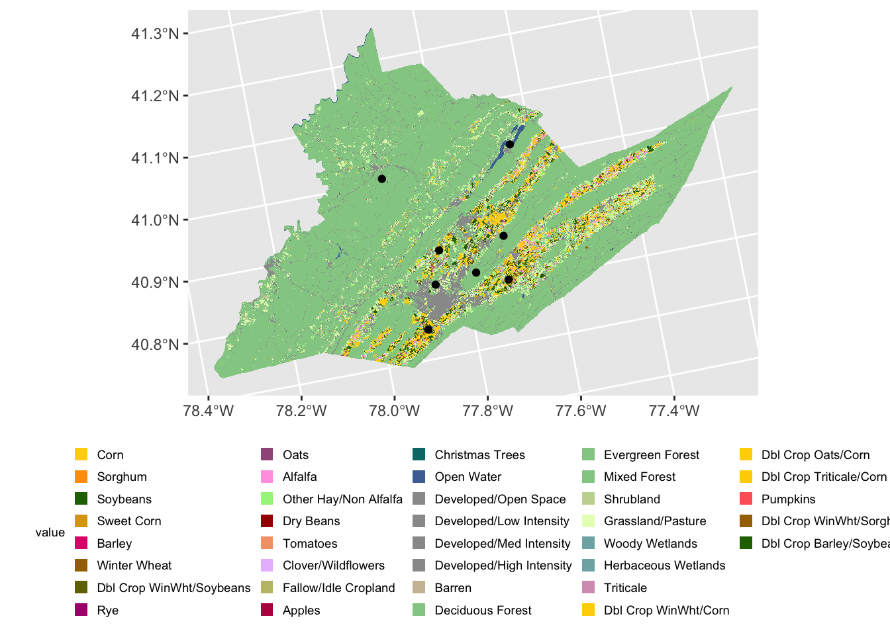

library(dplyr)
library(ggplot2)
library(sf)
library(terra)
library(tidyterra)Extracting buffers
BeeSpatial provides forage, nesting, and insecticide rasters as buffered summaries using distance-weighted means of 1, 3, and 5km radius buffers. This means that each pixel of the raster represents the distance-weighted mean of the index values within the corresponding buffer radius. Only the CDL output summary is not a distance-weighted mean. It is the proportion of each land cover class.
If you want your own buffer summaries of the CDL or forage, nesting, or insecticide indices, this tutorial shows how to do that using proportional area (for CDL) or simple means (habitat indices).
Load packages
First, load the necessary packages. More info on these packages and their installation can be found here.
Read in the CDL data downloaded from BeeSpatial.
centre_cdl <- rast("data/CDL_2021_FIPS_42027.tif") # change the filepath to reflect where you've stored the dataRead in point data
Often we collect and store point data as coordinates in a non-spatial format such as a csv file which we need to convert into a spatial object in R.
In the /data directory you should find a csv file with a set of points from Centre County Pa. We will read in and inspect these data.
centre_sites <- read.csv("data/centre_co_pts.csv")
centre_sites SiteID Long Lat
1 Site1 -77.70654 40.80497
2 Site2 -77.89991 40.74921
3 Site3 -77.93778 41.00641
4 Site4 -77.86590 40.81954
5 Site5 -77.64715 41.02197
6 Site6 -77.84409 40.87366
7 Site7 -77.77373 40.82634
8 Site8 -77.69934 40.87697and convert them into an sf spatial object. We use the coords= argument to indicate the columns that hold the longitude (X) and latitude (Y). We can also specify the CRS using the ‘crs=’ arguments and the appropriate EPSG code or other crs object. In our case we will give the EPSG code 4326 which corresponds to WGS 84, the system commonly used by Google Earth.
centre_sites <- st_as_sf(centre_sites,
coords=c("Long","Lat"), #indicate the x and y columns
crs = 4326) #set the crswhen we inspect the center_sites object we see that there is now additional information at the top.
centre_sitesSimple feature collection with 8 features and 1 field
Geometry type: POINT
Dimension: XY
Bounding box: xmin: -77.93778 ymin: 40.74921 xmax: -77.64715 ymax: 41.02197
Geodetic CRS: WGS 84
SiteID geometry
1 Site1 POINT (-77.70654 40.80497)
2 Site2 POINT (-77.89991 40.74921)
3 Site3 POINT (-77.93778 41.00641)
4 Site4 POINT (-77.8659 40.81954)
5 Site5 POINT (-77.64715 41.02197)
6 Site6 POINT (-77.84409 40.87366)
7 Site7 POINT (-77.77373 40.82634)
8 Site8 POINT (-77.69934 40.87697)Visualize point data
Using ggplot2 and sf we can add our points to our earlier map of Centre county with the geom_sf() function.
#Centre county CDL from raster exercise
centre_cdl <- rast("data/centre_county_cdl_2021.tif")
ggplot()+
geom_spatraster(data = centre_cdl, aes(fill = class_name)) +
geom_sf(data=centre_sites) +
theme(legend.title = element_text(size = 7),
legend.text = element_text(size = 7),
legend.key.size = unit(0.25, 'cm'),
legend.position="bottom") <SpatRaster> resampled to 500797 cells.
Buffer around points
We can create a polygon object from our points by buffering around them in a 1000m radius. For example, we might do this when assessing land cover values around a site.
centre_sites_1000m <- st_buffer(centre_sites, 1000)
centre_sites_1000mSimple feature collection with 8 features and 1 field
Geometry type: POLYGON
Dimension: XY
Bounding box: xmin: -77.94977 ymin: 40.74008 xmax: -77.63518 ymax: 41.03112
Geodetic CRS: WGS 84
SiteID geometry
1 Site1 POLYGON ((-77.70945 40.8137...
2 Site2 POLYGON ((-77.90568 40.7412...
3 Site3 POLYGON ((-77.92781 41.0013...
4 Site4 POLYGON ((-77.85495 40.8230...
5 Site5 POLYGON ((-77.65648 41.0163...
6 Site6 POLYGON ((-77.84816 40.8651...
7 Site7 POLYGON ((-77.76805 40.8184...
8 Site8 POLYGON ((-77.69978 40.886,...We can visualize this buffer by adding it to our plot. Note you may need to expand your plot size to see the buffers behind the points.
ggplot()+
geom_spatraster(data = centre_cdl, aes(fill = class_name)) +
geom_sf(data = centre_sites_1000m)+
geom_sf(data=centre_sites) +
theme(legend.title = element_text(size = 7),
legend.text = element_text(size = 7),
legend.key.size = unit(0.25, 'cm'),
legend.position="bottom") <SpatRaster> resampled to 500797 cells.Extract CDL values within buffers
If we wanted to assess land cover around a site in a way that is similar to the results that beeshiny provides, we can use the extract() function from terra. First providing the raster we want to extract values from, then the sf object that defines the zones in which the raster will the summarized.
centre_table_1000m <- extract(centre_cdl, centre_sites_1000m, fun="table", ID=F)Warning: [extract] transforming vector data to the CRS of the rastercentre_table_1000m Background Corn Cotton Rice Sorghum Soybeans Sunflower Peanuts Tobacco
1 0 1241 0 0 12 1021 0 0 0
2 0 1167 0 0 0 968 0 0 0
3 0 0 0 0 0 0 0 0 0
4 0 64 0 0 0 80 0 0 0
5 0 18 0 0 1 5 0 0 0
6 0 882 0 0 1 836 0 0 0
7 0 0 0 0 0 0 0 0 0
8 0 92 0 0 0 0 0 0 0
Sweet Corn Pop or Orn Corn Mint Barley Durum Wheat Spring Wheat Winter Wheat
1 0 0 0 0 0 0 225
2 0 0 0 7 0 0 445
3 0 0 0 0 0 0 0
4 0 0 0 1 0 0 7
5 0 0 0 0 0 0 1
6 0 0 0 1 0 0 24
7 0 0 0 0 0 0 0
8 0 0 0 0 0 0 0
Other Small Grains Dbl Crop WinWht/Soybeans Rye Oats Millet Speltz Canola
1 0 0 2 20 0 0 0
2 0 0 7 136 0 0 0
3 0 0 0 0 0 0 0
4 0 0 0 0 0 0 0
5 0 0 0 0 0 0 0
6 0 0 0 0 0 0 0
7 0 0 0 0 0 0 0
8 0 0 0 0 0 0 0
Flaxseed Safflower Rape Seed Mustard Alfalfa Other Hay/Non Alfalfa Camelina
1 0 0 0 0 156 88 0
2 0 0 0 0 100 29 0
3 0 0 0 0 0 0 0
4 0 0 0 0 82 410 0
5 0 0 0 0 2 50 0
6 0 0 0 0 124 407 0
7 0 0 0 0 0 0 0
8 0 0 0 0 4 25 0
Buckwheat Sugarbeets Dry Beans Potatoes Other Crops Sugarcane Sweet Potatoes
1 0 0 43 0 0 0 0
2 0 0 118 0 0 0 0
3 0 0 0 0 0 0 0
4 0 0 0 0 0 0 0
5 0 0 1 0 0 0 0
6 0 0 0 0 0 0 0
7 0 0 0 0 0 0 0
8 0 0 0 0 0 0 0
Misc Vegs & Fruits Watermelons Onions Cucumbers Chick Peas Lentils Peas
1 0 0 0 0 0 0 0
2 0 0 0 0 0 0 0
3 0 0 0 0 0 0 0
4 0 0 0 0 0 0 0
5 0 0 0 0 0 0 0
6 0 0 0 0 0 0 0
7 0 0 0 0 0 0 0
8 0 0 0 0 0 0 0
Tomatoes Caneberries Hops Herbs Clover/Wildflowers Sod/Grass Seed Switchgrass
1 0 0 0 0 0 0 0
2 0 0 0 0 0 0 0
3 0 0 0 0 0 0 0
4 1 0 0 0 0 0 0
5 1 0 0 0 0 0 0
6 0 0 0 0 0 0 0
7 0 0 0 0 0 0 0
8 0 0 0 0 0 0 0
Fallow/Idle Cropland Forest Cherries Peaches Apples Grapes Christmas Trees
1 0 0 0 0 0 0 0
2 0 0 0 0 0 0 0
3 0 0 0 0 0 0 0
4 0 0 0 0 1 0 0
5 0 0 0 0 0 0 0
6 0 0 0 0 1 0 0
7 0 0 0 0 0 0 0
8 0 0 0 0 0 0 0
Other Tree Crops Citrus Pecans Almonds Walnuts Pears Clouds/No Data Developed
1 0 0 0 0 0 0 0 0
2 0 0 0 0 0 0 0 0
3 0 0 0 0 0 0 0 0
4 0 0 0 0 0 0 0 0
5 0 0 0 0 0 0 0 0
6 0 0 0 0 0 0 0 0
7 0 0 0 0 0 0 0 0
8 0 0 0 0 0 0 0 0
Water Wetlands Nonag/Undefined Aquaculture Open Water Perennial Ice/Snow
1 0 0 0 0 0 0
2 0 0 0 0 0 0
3 0 0 0 0 0 0
4 0 0 0 0 0 0
5 0 0 0 0 1621 0
6 0 0 0 0 0 0
7 0 0 0 0 0 0
8 0 0 0 0 0 0
Developed/Open Space Developed/Low Intensity Developed/Med Intensity
1 224 69 22
2 52 95 45
3 208 9 2
4 298 367 401
5 172 95 33
6 299 214 22
7 135 1 0
8 162 8 1
Developed/High Intensity Barren Deciduous Forest Evergreen Forest
1 2 4 178 10
2 8 0 116 1
3 0 0 3263 1
4 137 1 474 106
5 0 7 391 35
6 4 1 236 6
7 0 0 3358 9
8 0 7 2216 533
Mixed Forest Shrubland Grassland/Pasture Woody Wetlands Herbaceous Wetlands
1 22 0 213 0 0
2 12 0 241 0 0
3 56 0 9 0 0
4 303 1 806 0 0
5 692 1 415 5 1
6 56 1 437 0 0
7 37 5 4 0 0
8 458 1 36 5 0
Pistachios Triticale Carrots Asparagus Garlic Cantaloupes Prunes Olives
1 0 0 0 0 0 0 0 0
2 0 2 0 0 0 0 0 0
3 0 0 0 0 0 0 0 0
4 0 1 0 0 0 0 0 0
5 0 1 0 0 0 0 0 0
6 0 0 0 0 0 0 0 0
7 0 0 0 0 0 0 0 0
8 0 0 0 0 0 0 0 0
Oranges Honeydew Melons Broccoli Avocados Peppers Pomegranates Nectarines
1 0 0 0 0 0 0 0
2 0 0 0 0 0 0 0
3 0 0 0 0 0 0 0
4 0 0 0 0 0 0 0
5 0 0 0 0 0 0 0
6 0 0 0 0 0 0 0
7 0 0 0 0 0 0 0
8 0 0 0 0 0 0 0
Greens Plums Strawberries Squash Apricots Vetch Dbl Crop WinWht/Corn
1 0 0 0 0 0 0 0
2 0 0 0 0 0 0 2
3 0 0 0 0 0 0 0
4 0 0 0 0 0 0 3
5 0 0 0 0 0 0 0
6 0 0 0 0 0 0 0
7 0 0 0 0 0 0 0
8 0 0 0 0 0 0 0
Dbl Crop Oats/Corn Lettuce Dbl Crop Triticale/Corn Pumpkins
1 0 0 0 0
2 0 0 0 0
3 0 0 0 0
4 0 0 1 1
5 1 0 0 0
6 0 0 0 0
7 0 0 0 0
8 0 0 0 0
Dbl Crop Lettuce/Durum Wht Dbl Crop Lettuce/Cantaloupe
1 0 0
2 0 0
3 0 0
4 0 0
5 0 0
6 0 0
7 0 0
8 0 0
Dbl Crop Lettuce/Cotton Dbl Crop Lettuce/Barley Dbl Crop Durum Wht/Sorghum
1 0 0 0
2 0 0 0
3 0 0 0
4 0 0 0
5 0 0 0
6 0 0 0
7 0 0 0
8 0 0 0
Dbl Crop Barley/Sorghum Dbl Crop WinWht/Sorghum Dbl Crop Barley/Corn
1 0 0 0
2 0 0 0
3 0 0 0
4 0 1 0
5 0 0 0
6 0 0 0
7 0 0 0
8 0 0 0
Dbl Crop WinWht/Cotton Dbl Crop Soybeans/Cotton Dbl Crop Soybeans/Oats
1 0 0 0
2 0 0 0
3 0 0 0
4 0 0 0
5 0 0 0
6 0 0 0
7 0 0 0
8 0 0 0
Dbl Crop Corn/Soybeans Blueberries Cabbage Cauliflower Celery Radishes
1 0 0 0 0 0 0
2 0 0 0 0 0 0
3 0 0 0 0 0 0
4 0 0 0 0 0 0
5 0 0 0 0 0 0
6 0 0 0 0 0 0
7 0 0 0 0 0 0
8 0 0 0 0 0 0
Turnips Eggplants Gourds Cranberries Dbl Crop Barley/Soybeans
1 0 0 0 0 0
2 0 0 0 0 0
3 0 0 0 0 0
4 0 0 0 0 0
5 0 0 0 0 0
6 0 0 0 0 0
7 0 0 0 0 0
8 0 0 0 0 0We can calculate additional statistics such as the area within the buffer for each site.
Area_m2 <- rowSums(centre_table_1000m)*900and turn our table into proportional cover of different land classes.
centre_table_1000m_prop <- centre_table_1000m/rowSums(centre_table_1000m)
centre_table_1000m_prop <- cbind(Area_m2,centre_table_1000m_prop)
centre_table_1000m_prop Area_m2 Background Corn Cotton Rice Sorghum Soybeans Sunflower
1 3196800 0 0.349380631 0 0 0.0033783784 0.287443694 0
2 3195900 0 0.328639820 0 0 0.0000000000 0.272599268 0
3 3193200 0 0.000000000 0 0 0.0000000000 0.000000000 0
4 3192300 0 0.018043417 0 0 0.0000000000 0.022554271 0
5 3194100 0 0.005071851 0 0 0.0002817695 0.001408848 0
6 3196800 0 0.248310811 0 0 0.0002815315 0.235360360 0
7 3194100 0 0.000000000 0 0 0.0000000000 0.000000000 0
8 3193200 0 0.025930101 0 0 0.0000000000 0.000000000 0
Peanuts Tobacco Sweet Corn Pop or Orn Corn Mint Barley Durum Wheat
1 0 0 0 0 0 0.0000000000 0
2 0 0 0 0 0 0.0019712757 0
3 0 0 0 0 0 0.0000000000 0
4 0 0 0 0 0 0.0002819284 0
5 0 0 0 0 0 0.0000000000 0
6 0 0 0 0 0 0.0002815315 0
7 0 0 0 0 0 0.0000000000 0
8 0 0 0 0 0 0.0000000000 0
Spring Wheat Winter Wheat Other Small Grains Dbl Crop WinWht/Soybeans
1 0 0.0633445946 0 0
2 0 0.1253168122 0 0
3 0 0.0000000000 0 0
4 0 0.0019734987 0 0
5 0 0.0002817695 0 0
6 0 0.0067567568 0 0
7 0 0.0000000000 0 0
8 0 0.0000000000 0 0
Rye Oats Millet Speltz Canola Flaxseed Safflower Rape Seed
1 0.0005630631 0.005630631 0 0 0 0 0 0
2 0.0019712757 0.038299071 0 0 0 0 0 0
3 0.0000000000 0.000000000 0 0 0 0 0 0
4 0.0000000000 0.000000000 0 0 0 0 0 0
5 0.0000000000 0.000000000 0 0 0 0 0 0
6 0.0000000000 0.000000000 0 0 0 0 0 0
7 0.0000000000 0.000000000 0 0 0 0 0 0
8 0.0000000000 0.000000000 0 0 0 0 0 0
Mustard Alfalfa Other Hay/Non Alfalfa Camelina Buckwheat Sugarbeets
1 0 0.043918919 0.024774775 0 0 0
2 0 0.028161081 0.008166714 0 0 0
3 0 0.000000000 0.000000000 0 0 0
4 0 0.023118128 0.115590640 0 0 0
5 0 0.000563539 0.014088476 0 0 0
6 0 0.034909910 0.114583333 0 0 0
7 0 0.000000000 0.000000000 0 0 0
8 0 0.001127396 0.007046223 0 0 0
Dry Beans Potatoes Other Crops Sugarcane Sweet Potatoes Misc Vegs & Fruits
1 0.0121058559 0 0 0 0 0
2 0.0332300760 0 0 0 0 0
3 0.0000000000 0 0 0 0 0
4 0.0000000000 0 0 0 0 0
5 0.0002817695 0 0 0 0 0
6 0.0000000000 0 0 0 0 0
7 0.0000000000 0 0 0 0 0
8 0.0000000000 0 0 0 0 0
Watermelons Onions Cucumbers Chick Peas Lentils Peas Tomatoes Caneberries
1 0 0 0 0 0 0 0.0000000000 0
2 0 0 0 0 0 0 0.0000000000 0
3 0 0 0 0 0 0 0.0000000000 0
4 0 0 0 0 0 0 0.0002819284 0
5 0 0 0 0 0 0 0.0002817695 0
6 0 0 0 0 0 0 0.0000000000 0
7 0 0 0 0 0 0 0.0000000000 0
8 0 0 0 0 0 0 0.0000000000 0
Hops Herbs Clover/Wildflowers Sod/Grass Seed Switchgrass Fallow/Idle Cropland
1 0 0 0 0 0 0
2 0 0 0 0 0 0
3 0 0 0 0 0 0
4 0 0 0 0 0 0
5 0 0 0 0 0 0
6 0 0 0 0 0 0
7 0 0 0 0 0 0
8 0 0 0 0 0 0
Forest Cherries Peaches Apples Grapes Christmas Trees Other Tree Crops
1 0 0 0 0.0000000000 0 0 0
2 0 0 0 0.0000000000 0 0 0
3 0 0 0 0.0000000000 0 0 0
4 0 0 0 0.0002819284 0 0 0
5 0 0 0 0.0000000000 0 0 0
6 0 0 0 0.0002815315 0 0 0
7 0 0 0 0.0000000000 0 0 0
8 0 0 0 0.0000000000 0 0 0
Citrus Pecans Almonds Walnuts Pears Clouds/No Data Developed Water Wetlands
1 0 0 0 0 0 0 0 0 0
2 0 0 0 0 0 0 0 0 0
3 0 0 0 0 0 0 0 0 0
4 0 0 0 0 0 0 0 0 0
5 0 0 0 0 0 0 0 0 0
6 0 0 0 0 0 0 0 0 0
7 0 0 0 0 0 0 0 0 0
8 0 0 0 0 0 0 0 0 0
Nonag/Undefined Aquaculture Open Water Perennial Ice/Snow
1 0 0 0.0000000 0
2 0 0 0.0000000 0
3 0 0 0.0000000 0
4 0 0 0.0000000 0
5 0 0 0.4567484 0
6 0 0 0.0000000 0
7 0 0 0.0000000 0
8 0 0 0.0000000 0
Developed/Open Space Developed/Low Intensity Developed/Med Intensity
1 0.06306306 0.0194256757 0.0061936937
2 0.01464376 0.0267530273 0.0126724866
3 0.05862458 0.0025366404 0.0005636979
4 0.08401466 0.1034677192 0.1130532845
5 0.04846436 0.0267681037 0.0092983939
6 0.08417793 0.0602477477 0.0061936937
7 0.03803888 0.0002817695 0.0000000000
8 0.04565953 0.0022547914 0.0002818489
Developed/High Intensity Barren Deciduous Forest Evergreen Forest
1 0.0005630631 0.0011261261 0.05011261 0.0028153153
2 0.0022528865 0.0000000000 0.03266685 0.0002816108
3 0.0000000000 0.0000000000 0.91967306 0.0002818489
4 0.0386241895 0.0002819284 0.13363406 0.0298844094
5 0.0000000000 0.0019723866 0.11017188 0.0098619329
6 0.0011261261 0.0002815315 0.06644144 0.0016891892
7 0.0000000000 0.0000000000 0.94618202 0.0025359256
8 0.0000000000 0.0019729425 0.62457723 0.1502254791
Mixed Forest Shrubland Grassland/Pasture Woody Wetlands
1 0.006193694 0.0000000000 0.059966216 0.000000000
2 0.003379330 0.0000000000 0.067868206 0.000000000
3 0.015783540 0.0000000000 0.002536640 0.000000000
4 0.085424302 0.0002819284 0.227234282 0.000000000
5 0.194984503 0.0002817695 0.116934348 0.001408848
6 0.015765766 0.0002815315 0.123029279 0.000000000
7 0.010425472 0.0014088476 0.001127078 0.000000000
8 0.129086809 0.0002818489 0.010146561 0.001409245
Herbaceous Wetlands Pistachios Triticale Carrots Asparagus Garlic
1 0.0000000000 0 0.0000000000 0 0 0
2 0.0000000000 0 0.0005632216 0 0 0
3 0.0000000000 0 0.0000000000 0 0 0
4 0.0000000000 0 0.0002819284 0 0 0
5 0.0002817695 0 0.0002817695 0 0 0
6 0.0000000000 0 0.0000000000 0 0 0
7 0.0000000000 0 0.0000000000 0 0 0
8 0.0000000000 0 0.0000000000 0 0 0
Cantaloupes Prunes Olives Oranges Honeydew Melons Broccoli Avocados Peppers
1 0 0 0 0 0 0 0 0
2 0 0 0 0 0 0 0 0
3 0 0 0 0 0 0 0 0
4 0 0 0 0 0 0 0 0
5 0 0 0 0 0 0 0 0
6 0 0 0 0 0 0 0 0
7 0 0 0 0 0 0 0 0
8 0 0 0 0 0 0 0 0
Pomegranates Nectarines Greens Plums Strawberries Squash Apricots Vetch
1 0 0 0 0 0 0 0 0
2 0 0 0 0 0 0 0 0
3 0 0 0 0 0 0 0 0
4 0 0 0 0 0 0 0 0
5 0 0 0 0 0 0 0 0
6 0 0 0 0 0 0 0 0
7 0 0 0 0 0 0 0 0
8 0 0 0 0 0 0 0 0
Dbl Crop WinWht/Corn Dbl Crop Oats/Corn Lettuce Dbl Crop Triticale/Corn
1 0.0000000000 0.0000000000 0 0.0000000000
2 0.0005632216 0.0000000000 0 0.0000000000
3 0.0000000000 0.0000000000 0 0.0000000000
4 0.0008457852 0.0000000000 0 0.0002819284
5 0.0000000000 0.0002817695 0 0.0000000000
6 0.0000000000 0.0000000000 0 0.0000000000
7 0.0000000000 0.0000000000 0 0.0000000000
8 0.0000000000 0.0000000000 0 0.0000000000
Pumpkins Dbl Crop Lettuce/Durum Wht Dbl Crop Lettuce/Cantaloupe
1 0.0000000000 0 0
2 0.0000000000 0 0
3 0.0000000000 0 0
4 0.0002819284 0 0
5 0.0000000000 0 0
6 0.0000000000 0 0
7 0.0000000000 0 0
8 0.0000000000 0 0
Dbl Crop Lettuce/Cotton Dbl Crop Lettuce/Barley Dbl Crop Durum Wht/Sorghum
1 0 0 0
2 0 0 0
3 0 0 0
4 0 0 0
5 0 0 0
6 0 0 0
7 0 0 0
8 0 0 0
Dbl Crop Barley/Sorghum Dbl Crop WinWht/Sorghum Dbl Crop Barley/Corn
1 0 0.0000000000 0
2 0 0.0000000000 0
3 0 0.0000000000 0
4 0 0.0002819284 0
5 0 0.0000000000 0
6 0 0.0000000000 0
7 0 0.0000000000 0
8 0 0.0000000000 0
Dbl Crop WinWht/Cotton Dbl Crop Soybeans/Cotton Dbl Crop Soybeans/Oats
1 0 0 0
2 0 0 0
3 0 0 0
4 0 0 0
5 0 0 0
6 0 0 0
7 0 0 0
8 0 0 0
Dbl Crop Corn/Soybeans Blueberries Cabbage Cauliflower Celery Radishes
1 0 0 0 0 0 0
2 0 0 0 0 0 0
3 0 0 0 0 0 0
4 0 0 0 0 0 0
5 0 0 0 0 0 0
6 0 0 0 0 0 0
7 0 0 0 0 0 0
8 0 0 0 0 0 0
Turnips Eggplants Gourds Cranberries Dbl Crop Barley/Soybeans
1 0 0 0 0 0
2 0 0 0 0 0
3 0 0 0 0 0
4 0 0 0 0 0
5 0 0 0 0 0
6 0 0 0 0 0
7 0 0 0 0 0
8 0 0 0 0 0Write out shapefiles
we can write out vector data to shapefiles using st_write()
st_write(centre_sites, "data/centre_sites.shp", delete_layer = TRUE)Deleting layer `centre_sites' using driver `ESRI Shapefile'
Writing layer `centre_sites' to data source
`data/centre_sites.shp' using driver `ESRI Shapefile'
Writing 8 features with 1 fields and geometry type Point.st_write(centre_sites_1000m, "data/centre_sites_buffer_1000m.shp", delete_layer = TRUE)Deleting layer `centre_sites_buffer_1000m' using driver `ESRI Shapefile'
Writing layer `centre_sites_buffer_1000m' to data source
`data/centre_sites_buffer_1000m.shp' using driver `ESRI Shapefile'
Writing 8 features with 1 fields and geometry type Polygon.